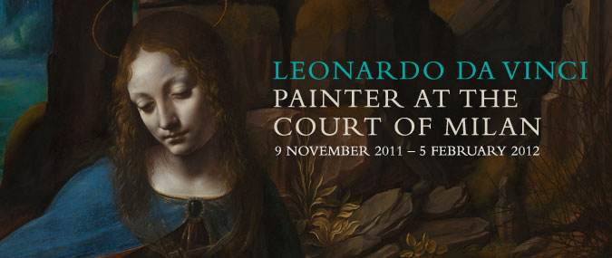

Mediolan dla Leonarda
Leonardo to nie tylko Mona Lisa, projekty machin latających i Człowiek witruwiański. To również, a może przede wszystkim, dzieła powstałe podczas pobytu artysty na dworze Lodovica Sforzy w Mediolanie, jak «La Belle Ferronière», «Madonna Litta» oraz druga wersja «Madonny wśród skał» z tajemniczymi postaciami św. Jana i Ariel.
Londyńska National Gallery anonsuje właśnie imponującą wystawę Leonardo da Vinci: Painter at the Court of Milan, poświęconą działalności artystycznej Leonarda z tego właśnie okresu.
Mediolan Leonarda da Vinci to jednak przede wszystkim «Ostatnia Wieczerza» w refektarzu klasztoru Santa Maria delle Grazie. Na londyńskiej wystawie pojawi się pełnowymiarowa, wypożyczona z Royal Academy kopia słynnego malowidła. Dzieła, o którym pisał Rilke:
Mediolan, w nim «Ostatnia Wieczerza», wspaniała ponad wszelkie opisy, malarstwo bliskie antycznym freskom, sztuka nieporównywalna z niczym, niemal zapomniana, zupełnie jakby ktoś wzruszonym głosem opowiadał o czymś niewidzialnym, nie do wysłowienia, a jednak współczesna i w swej najgłębszej istocie niezniszczalna.